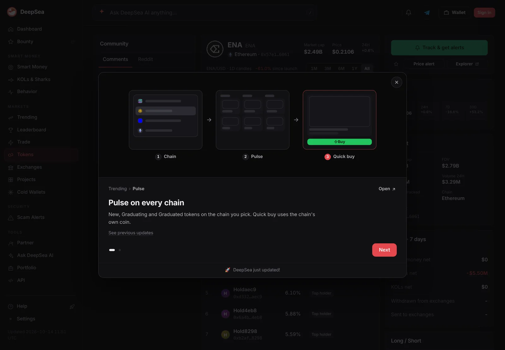
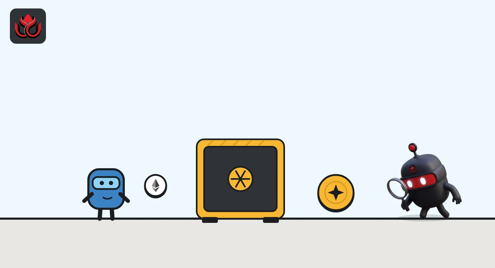
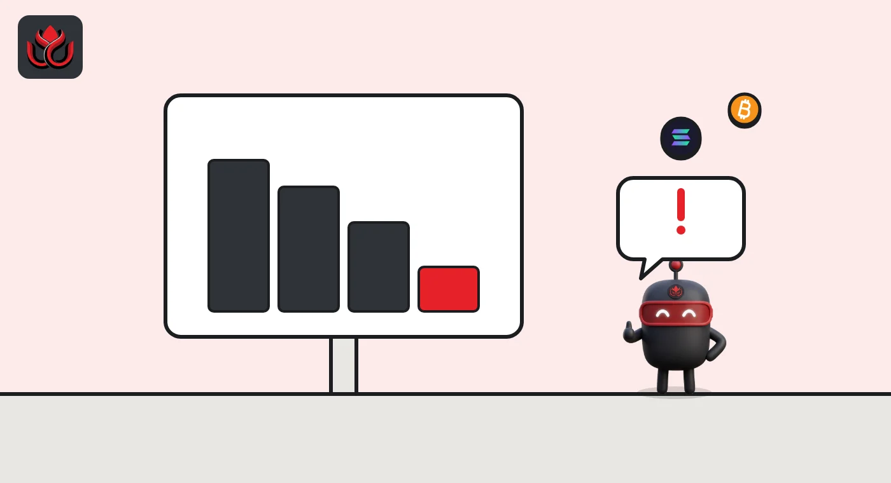

What is Ethena USDe? How the hedged synthetic dollar works and what can break it
USDe is Ethena's synthetic dollar. It is backed by crypto and stablecoins, with the crypto's price risk canceled out by short futures, and its staked version, sUSDe, earns from that trade until funding rates turn against it.
Key points
- USDe is not backed by cash in a bank. It holds crypto and stablecoins and hedges the crypto with short perpetual futures.
- Only whitelisted users who pass KYC can mint and redeem USDe directly, and Ethena's app is not open to US users.
- Staking USDe gives sUSDe, which earns rewards from staked ETH income and futures funding. Rewards can be zero but not negative.
- The main risk is long stretches of negative funding rates, when the hedge costs money instead of earning it.
 What DeepSea's data shows
What DeepSea's data shows
DeepSea's ENA page showed the governance token at $0.1788 on November 2, with a market cap of $2.40 billion. ENA was down 16.6% over seven days but up 53.2% over 30 days.
Big holders were selling. DeepSea shows whales as net sellers of about $5.56 million of ENA over seven days, while 90% of the perpetual futures positions it tracks in ENA, about $23.08 million, were long.

Data: DeepSea (desea.io), checked November 2, 2026, 7:58 a.m. ET.
What is Ethena USDe?
USDe is a synthetic dollar issued by the Ethena protocol. It aims to stay worth $1, but it does not work like USDC or USDT, which hold cash and short-term government debt. USDe is backed by volatile assets such as spot crypto and tokenized equities, plus stablecoins and short-dated real-world assets, and the price risk of the volatile assets is offset with short futures positions, per Ethena's docs.
Ethena calls this a delta-neutral backing. Delta is how much a position gains or loses when the price moves. Hold $100 of ETH and short $100 of ETH futures, and the two moves cancel out, so the combined position stays near $100 whichever way ETH goes.
A worked example: suppose $1,000 of ETH backs 1,000 USDe, with a $1,000 short ETH perpetual against it. If ETH falls 20%, the spot ETH is worth $800 but the short gains about $200, so the backing is still near $1,000. If ETH rises 20%, the spot gains $200 and the short loses about $200. The dollar value stays roughly flat either way. What is left over is the income from staking, funding and stablecoin rewards, minus costs.
How is USDe minted and redeemed?
Ethena's example: a whitelisted user deposits about $100 of USDT and receives about 100 new USDe, minus gas and the cost of placing the hedge. For each new position backed by volatile assets, the protocol opens a short perpetual future of roughly the same size on a derivatives exchange.
Direct access is limited. All addresses must be whitelisted after KYC and anti-money laundering checks, according to Ethena's FAQ, which also says US users cannot access the application. Everyone else gets USDe on the open market.
The backing is not handed to exchanges. It sits with off-exchange settlement providers, custodians that let Ethena post the assets as margin while keeping custody. Ethena's FAQ says that if an exchange fails, those funds are not expected to be locked or caught up in the bankruptcy.

Where does sUSDe yield come from?
Ethena's FAQ lists three sources: staking income on ETH backing, funding rates or basis on the short futures, and rewards on liquid stablecoins.
Funding is the key one. Perpetual futures never expire, so exchanges keep their price near the spot price with regular payments between buyers and sellers. When most traders are long, longs pay shorts. Ethena holds the short side, so it usually collects. The FAQ cites a historical average annualized funding rate of 9.03% for ETH and 7.79% for BTC, and staked ETH rewards of "around 3-4%". Those are past figures, not a promised rate.
To earn, holders stake USDe and receive sUSDe. Per the staking docs, sUSDe is an ERC-4626 vault token whose USDe value rises as rewards arrive. Rewards land every 8 hours and vest over the next 8 hours. They can be positive or zero, never negative. Unstaking has a cooldown, during which funds sit in a separate contract. sUSDe is not offered to residents of the EU or the EEA.
Where is USDe used?
USDe and sUSDe show up across DeFi, especially on Aave. Aave V4's Ethereum launch plan, reviewed by LlamaRisk, included a whole hub, called Plus, for Ethena strategies, with an Ethena Ecosystem spoke and an Ethena Correlated spoke. A separate proposal would list USDe on Aave V4's Avalanche hub, and another would add PT-sUSDe, a Pendle fixed-maturity token based on sUSDe, to Aave's market on Plasma.
These uses usually work the same way. A user deposits sUSDe or USDe as collateral, borrows a stablecoin such as USDT or USDC, and buys more USDe. The strategy pays off when the sUSDe reward rate is above the borrowing rate. When the gap closes or flips, the loop loses money, and if USDe's market price drops, leveraged positions can be liquidated.
That makes USDe's health a question for lenders too. Aave and its risk providers set caps on how much USDe and sUSDe can be used, and change them as markets move.

What is ENA, and who runs Ethena?
ENA is Ethena's governance token. ENA holders voted in September 2026 for a fee switch that sends protocol revenue to ENA buybacks once USDe supply reaches $7.5 billion, as covered in our story on the vote. As of November 2, 2026, ENA traded at about $0.178 with a market cap of about $2.38 billion (about 13.4 billion ENA in circulation), per CoinMarketCap.
USDe is also moving into consumer apps. Ethena Pay, the team's money app on Avalanche, now offers a leveraged USDe strategy on Aave V4, which we covered here.
How is USDe different from USDC or USDT?
- Backing: USDC and USDT rely mainly on cash and cash-like reserves. USDe relies on crypto plus hedges, along with stablecoins and short-term real-world assets.
- Yield: USDC and USDT do not pay holders directly. sUSDe passes protocol rewards to stakers.
- Where the risk sits: fiat-backed coins depend on banks and the issuer. USDe depends on derivatives markets, exchanges and custodians.
What are the risks of USDe?
- Negative funding: when shorts pay longs, the hedge costs money. Ethena's FAQ says funding can be negative for significant periods and names Q3 2022 as the only quarter with a negative excess return on some exchanges. Part of Ethena's revenue goes to a reserve fund, and sUSDe rewards can fall to zero in such periods.
- Exchanges and custodians: hedges sit on derivatives exchanges and backing sits with custodians. A failure at either could hurt.
- Exit route: most holders cannot redeem directly, so in a rush they rely on market prices, which can dip below $1.
- Smart contracts: USDe, sUSDe and the apps built on them are code that can fail.
- Rules by country: access already varies, with US users barred from the app and sUSDe not offered in the EU or the EEA.
LC Insight analysis
This section is our reading of the facts above, not a statement of fact.
- The funding rate is the whole story. USDe works best when traders are eager to be long, and its real test is a long bear market when that appetite fades.
- Access is a growing limit. Direct minting needs KYC, the app is closed to US users and sUSDe is not offered in Europe, so many holders rely on market prices set by traders.
- USDe's health is now a lender's problem too. Looped sUSDe positions on Aave pay only while rewards beat borrowing costs, and a price dip could trigger liquidations in a chain.
What's next
- USDe supply against the $7.5 billion fee switch trigger
- Funding rates on the big derivatives exchanges
- The size and any use of Ethena's reserve fund
Frequently asked questions
Is USDe a stablecoin?
Ethena calls it a synthetic dollar. It targets $1, but its backing is crypto, stablecoins and futures hedges rather than bank deposits.
Can anyone redeem USDe with Ethena?
No. Only whitelisted users who pass KYC and anti-money laundering checks can mint and redeem directly. Others buy and sell USDe on the market.
Can sUSDe lose value?
Ethena says sUSDe rewards are positive or zero, so rewards cannot reduce it. sUSDe still carries the risks of USDe itself, such as a depeg.
How often are sUSDe rewards paid?
Every 8 hours, vesting over the following 8 hours, per Ethena's staking docs.
Disclaimer. This article is based on public information and the sources listed below as of the update time shown. It is for information only and is not investment, legal or tax advice. Figures may change as companies and authorities publish new data.